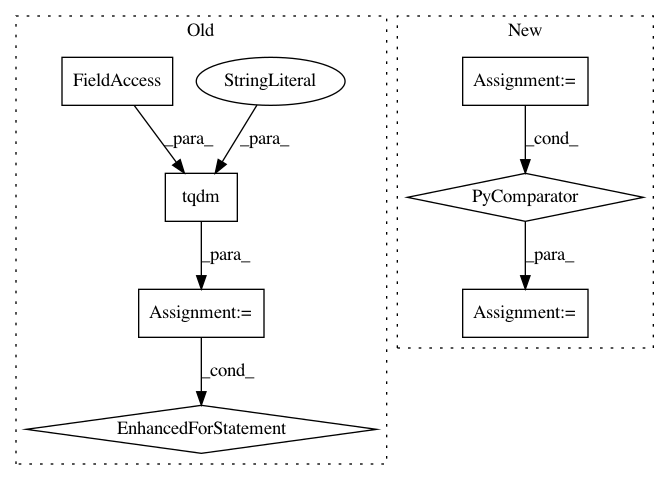

0e0b2faa1a205fe276a7c53bc600fca60b239234,tools/sort.py,Sort,sort_face_cnn_dissim,#Sort#,204
Before Change
logger.info("Sorting by face-cnn dissimilarity...")
img_list = []
for img in tqdm(self.find_images(input_dir),
desc="Loading",
file=sys.stdout):
landmarks = self.get_landmarks(img)
img_list.append([img, np.array(landmarks)
if landmarks
else np.zeros((68, 2)), 0])
img_list_len = len(img_list)
for i in tqdm(range(0, img_list_len - 1),
desc="Sorting",
file=sys.stdout):
After Change
logger.info("Sorting by landmark dissimilarity...")
filename_list, image_list, landmarks = self._get_landmarks()
scores = np.zeros(len(filename_list), dtype="float32")
img_list = list(list(items) for items in zip(filename_list, landmarks, scores))
logger.info("Comparing landmarks...")
img_list_len = len(img_list)
for i in tqdm(range(0, img_list_len - 1), desc="Comparing...", file=sys.stdout):
In pattern: SUPERPATTERN
Frequency: 3
Non-data size: 7
Instances
Project Name: deepfakes/faceswap
Commit Name: 0e0b2faa1a205fe276a7c53bc600fca60b239234
Time: 2019-10-28
Author: vrooman.kyle@gmail.com
File Name: tools/sort.py
Class Name: Sort
Method Name: sort_face_cnn_dissim
Project Name: deepfakes/faceswap
Commit Name: 0e0b2faa1a205fe276a7c53bc600fca60b239234
Time: 2019-10-28
Author: vrooman.kyle@gmail.com
File Name: tools/sort.py
Class Name: Sort
Method Name: sort_face_yaw
Project Name: deepfakes/faceswap
Commit Name: a8e8f9157b38314bb12910fe13fa7f34739d9c2b
Time: 2019-04-12
Author: 36920800+torzdf@users.noreply.github.com
File Name: tools/lib_alignments/jobs.py
Class Name: Merge
Method Name: process